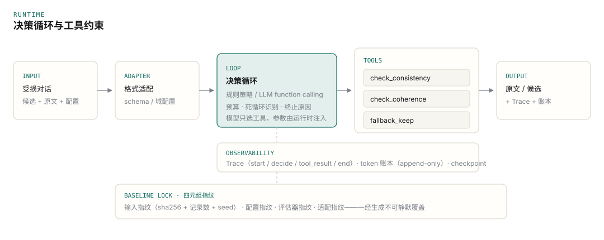

使用四个指纹固定基线用作对照组
基线由输入、配置、评估器、适配四个指纹组成，用来固定数据和评估口径。
baseline_lock.json 一经生成不可静默覆盖；变更必须
--force --reason，并写入 lock_changelog.md。
这样，更换数据或评估器后的结果不会被当作同一基线的复现。
Case 01 · Agent
这是一个可插拔的对话质量组件：检测跨轮断裂，优先保住原文， 并用可复现的对照臂、Trace 与成本账本证明每一步决策。
qwen3:8b 上运行，现金支出为 ¥0；
页面中的 ¥ 是按 DeepSeek 高峰价折算的参考成本，不代表真实账单。
模板拼接生成的对话通常“局部通顺、全局不连贯”，尤其是模块或场景切换处， 衔接可能生硬，甚至不符合真实对话逻辑。合成数据按上万条批次生成， 如果对每条对话都调用 LLM 检测并改写，会产生大量不必要的 API 开销。 因此，设计目标是先定位高风险轮次，再按需进行局部改写。实现上分为三类约束：
check_consistency 比较改写前后的对话，
校验 system 逐字一致，消息数、role 与 loss 不变，实体集合不增不减、说话人分布一致，
并检查 assistant 是否异常复读 user 内容；违规以 rule / turn / detail 结构化返回。check_coherence 检查相邻
assistant 轮次重复、空回复或过短回复，并可注入语义判官识别答非所问。
决策策略收到违规后调用 fallback_keep 返回原文；判官异常记为
C0_judge_error，不按校验通过处理。
当前版本已接入检测、回退、受限改写与可复现评测；改写只在通过复检后替换原文，
因此修复率仍偏低，repaired 样本需要人工抽检后才能当作真修复引用。

循环里模型只负责选择工具，工具参数由运行时注入；工具返回结果决定下一步， 直到命中终止工具或预算触顶。所有决策写入 Trace，所有 token 写入 append-only 账本， 实际成本与参考成本分开记录。
基线由输入、配置、评估器、适配四个指纹组成，用来固定数据和评估口径。
baseline_lock.json 一经生成不可静默覆盖；变更必须
--force --reason，并写入 lock_changelog.md。
这样，更换数据或评估器后的结果不会被当作同一基线的复现。
面对批量合成数据，全量调用 LLM 检测并改写会放大 API 成本，因此设计目标是 先定位模块或场景切换处的问题轮次，再按需局部改写。当前 LLM 在决策循环中只选择工具，参数由运行时注入，不直接生成或抄写对话文本，以减少输出 token， 并降低金额、编号、日期等字段被自由改写的风险。
不接受静默放行：任一硬约束报错就 fallback_keep 回退原文；
判官不可用记为 C0_judge_error 并同样回退。后续接入局部改写后，
LLM 候选也必须通过保真与连贯性检查，未通过就不替换原文；预算触顶则终止并标记
stopped，不输出未经验证的候选。
本轮生成与判官都在本地 Ollama qwen3:8b 上运行，现金支出为 ¥0。
为了能和 API 方案比较，我保留账本里的输入 / 缓存 / 输出 token，
再按 DeepSeek deepseek-flash 2026-11 高峰价
（输入 ¥2/M、缓存命中 ¥0.04/M、输出 ¥8/M）折算
参考成本。页面与图表中的 ¥ 都标明是参考值，不冒充真实账单。
缺陷集包含 6 类各 20 条，加 12 条干净样本。六个臂按单变量原则逐层加因子：
A2 只做单次 LLM 重写，用来隔离“工具循环”本身的净收益；A3 用规则决策 + 确定性工具；
A3L 只把决策者换成 LLM function calling；A3R 给规则策略补上 rewrite_segment；
A4 在 A3L 上加语义判官；A4R 是 LLM 决策拿到完整工具集后的上限。
| 臂 | 决策 | 工具 | D1 | D2 | D3 | D4 | D5 | D6 | 误报 | macro | tokens | 参考成本 |
|---|---|---|---|---|---|---|---|---|---|---|---|---|
| A2 | 单次重写 | 无 | 0/20 | 0/20 | 0/20 | 0/20 | 0/20 | 0/20 | 10/12 | 0.0% | 157,507 | ¥0.93* |
| A3 | 规则 | 确定性 | 0/20 | 20/20 | 20/20 | 20/20 | 20/20 | 20/20 | 0/12 | 83.3% | 0 | ¥0.00 |
| A3L | LLM | 确定性 | 0/20 | 20/20 | 20/20 | 20/20 | 20/20 | 20/20 | 0/12 | 83.3% | 233,376 | ¥0.87* |
| A3R | 规则 | 确定性 + rewrite | 0/20 | 20/20 | 20/20 | 6/20 | 10/20 | 20/20 | 0/12 | 63.3% | 40,729 | ¥0.21* |
| A4 | LLM | 确定性 + 判官 | 18/20 | 20/20 | 20/20 | 20/20 | 20/20 | 20/20 | 0/12 | 98.3% | 273,798 | ¥1.06* |
| A4R | LLM | 全工具集 | 6/20 | 20/20 | 20/20 | 20/20 | 15/20 | 20/20 | 0/12 | 84.2% | 429,264 | ¥1.42* |
D1 答非所问 · D2 指代断裂 · D3 事实冲突 · D4 角色混淆 · D5 重复空转 · D6 缺失承接。
* 参考成本：本地实际支出 ¥0；按 DeepSeek deepseek-flash 2026-11 高峰价
（输入 ¥2/M、缓存命中 ¥0.04/M、输出 ¥8/M）
对 append-only 账本全部调用（含判官与重试）折算。tokens 列只统计决策调用，
因此不能直接用 tokens × 单价复算。

RulePolicy 替换为 LLMPolicy。
宏观阻断率均为 83.3%；A3L 新增 284 次决策调用、233,376 tokens，
按 DeepSeek 价格折算参考成本 ¥0.87。在当前工具集和评测集上，
仅替换决策策略未带来可观测的检测增量。
check_coherence 注入语义判官。
D1 阻断数从 0/20 提升至 18/20，宏观阻断率从 83.3% 提升至 98.3%（+15.0pp），
参考成本增加 ¥0.19。D1 注入仅替换单轮 assistant 的 content，
R1–R5 和确定性 C1/C2 规则无法识别跨话题语义；A4 通过 C3_off_topic
记录违规并触发回退，但仍有 2 条漏判。
repaired 只代表“改写后通过校验”，必须人工抽检后才能当作真修复。
detected 表示循环期间出现过违规记录，blocked 表示最终状态为
fallback；干净样本被回退或被改写都计为干预。
A3L / A4 / A4R 分别有 2 / 2 / 3 条样本运行时 failed，已独立计数；
六个臂的判官故障均为 0，结果均标记为 valid。
除 A2（10/12）外，其余五个臂的干净样本干预均为 0/12。

下面是公开轨中的一个 D1 案例。注入缺陷时只把第 2 轮回复换成跨话题内容， 句子本身没有任何结构和实体问题。
user : 已经等很久了，麻烦帮我催一下。（订单号 ORD-556516）
assistant : 请在十五分钟内完成支付，否则订单会自动关闭。以下 Trace 来自历史 DeepSeek 运行，仅用于示意决策链；本轮指标来自本地 qwen3:8b。
| 步骤 | 动作 | 结果 |
|---|---|---|
| 1 | check_consistency |
通过：system / 结构 / 实体 / 说话人均未变 |
| 2 | check_coherence |
违规：C3_off_topic @turn 2，用户催单却回复要求支付 |
| 3 | fallback_keep |
回退原文，流程终止 |
{"seq": 4, "t_ms": 2219, "event": "decide", "key": "a932e46ea4f5bbab", "action": "call_tool", "tool": "check_coherence", "reason": "保真校验已通过（check_consistency: ok）。按流程继续做连贯性校验。"}
{"seq": 5, "t_ms": 3891, "event": "tool_result", "key": "a932e46ea4f5bbab", "tool": "check_coherence", "ok": false, "terminal": false, "latency_ms": 1671, "tokens": 673}
{"seq": 6, "t_ms": 5219, "event": "decide", "key": "a932e46ea4f5bbab", "action": "call_tool", "tool": "fallback_keep", "reason": "校验结果：保真校验通过；连贯性校验发现 1 处违规（C3_off_topic @turn 2，用户催单却回复要求支付，答非所问）。按规则不尝试改写，直接兜底保留原文。"}
{"seq": 7, "t_ms": 5219, "event": "tool_result", "key": "a932e46ea4f5bbab", "tool": "fallback_keep", "ok": true, "terminal": true, "latency_ms": 0, "tokens": 0}
{"seq": 8, "t_ms": 5219, "event": "end", "key": "a932e46ea4f5bbab", "status": "fallback", "termination": "tool_terminal"}Trace 原文见 04_trace_sample.jsonl； 完整前后对照见 05_before_after.md。

repaired 样本尚未人工抽检，不能当作语义正确的证明。qwen3:8b，
没有多模型对比与置信区间，也未跑跨臂显著性检验。下一步按价值排序：提升改写修复率并做人工盲评 → 在自然对话底座上做半合成缺陷 → 用同一训练配置验证下游收益。
该 Agent 由我独立设计并实现：运行时（决策循环、工具注册表、预算、Trace、checkpoint、 token 账本）、评测（硬约束、实体抽取、连贯性、语义判官）、基准（四元组指纹、不可变锁、 缺陷注入、六臂对照、模型溯源、报告生成）以及开源清单与边界测试。
开源切片按 oss_manifest.txt 导出，发布文件不含业务标识，
公开代码不依赖上游工程；独立目录实测 479 passed / 1 skipped。
源码仓库：github.com/Soleil-gzm/dialogue-repair-agent
python -m pip install -e ".[dev]"
# 同 seed 生成同数据
python -m agent.benchmark.fixtures --n 12 --seed 20261112
# 离线复现 A0 基线指纹
python -m agent.benchmark.run \
--input agent/fixtures/public/base_v1.json \
--arms A0 --verify-arm A0
# 本地 Ollama 复现（生成与判官同一模型）
$env:DEEPSEEK_API_KEY="ollama"
$env:DEEPSEEK_BASE_URL="http://127.0.0.1:11434/v1"
$env:DEEPSEEK_MODEL="qwen3:8b"
$env:JUDGE_MODEL="qwen3:8b"
$env:JUDGE_BASE_URL="http://127.0.0.1:11434/v1"
$env:LLM_PRICE_TABLE="local"
python -m agent.benchmark.agent_eval --arm A3 --out logs/.../ablation_A3.json
python -m agent.benchmark.agent_eval --arm A4 --live --out logs/.../ablation_A4.json
python -m agent.benchmark.report --results logs/... --out logs/.../report
python -m pytest完整数据与结论： HTML 报告 · Markdown · JSON。 报告由原始结果直接生成，成本字段为本地实际 ¥0；DeepSeek 参考成本见上表。